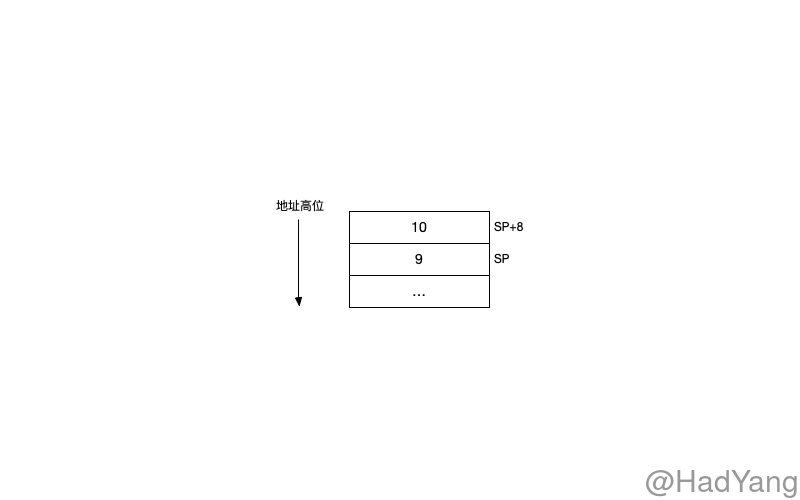
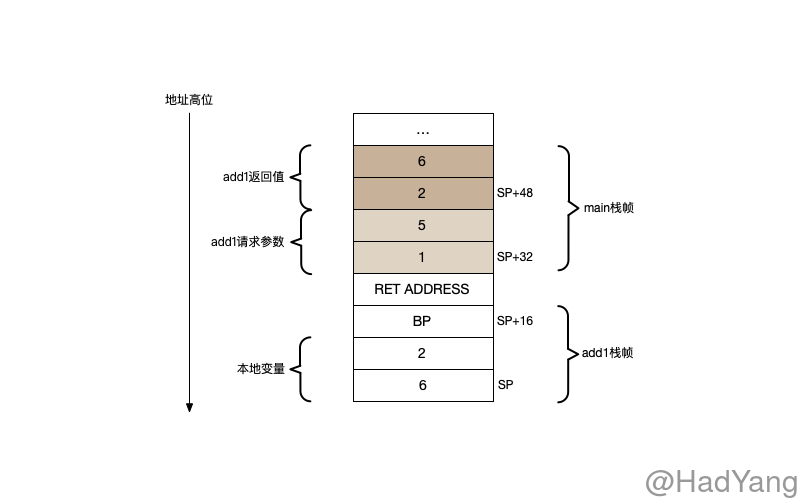

【Golang进阶】函数与栈
文章目录
Go 的汇编代码基于 Plan 9 进行改造的，提供一种半抽象的语义。其中有两个很大的不同，一个是操作符的优先级不同，Go 汇编会使用 Go 语言的优先级；第二个是负数的表示，在 Go 汇编中数字都是无符号的 64bit 表示，所以负数在汇编中不会表达位 “负”，而是与负数位相同的无符号 64bit 数字。
寄存器
某些符号是预定义寄存器符号，并且与特定的 CPU 架构有关，例如：R1、LR。在 Go 汇编中定义了四个 伪寄存器 ，伪寄存器由 Go 维护不存在物理上的寄存器，伪寄存器在不同的 CPU 架构上含义均一致。
FP: 栈帧指针，用于函数参数和本地变量PC: 指令计数器，用于分支和指令跳转SB: 静态基地址，指向全局变量SP: 栈指针，指向当前栈顶
SB 伪寄存器可以用来获取符号的内存地址，比如 foo(SB) 表示符号 foo 的内存地址，通常使用这种方式来访问全局函数和数据。通过在符号后增加偏移量可以访问特定位置的数据，foo+4(SB) 访问 foo 后 4byte 的数据。
foo在这里只是一个标记，没有任何的语义
在官方的文档中A Quick Guide to Go’s Assembler，FP 伪寄存器用于访问函数参数；
在 Linux/amd64 go 14 版本下，Go 编译器生成的代码中，没有出现 FP 寄存器。在多方考证下，发现这个疑问也困惑者其他开发人员 chapter1: Frame pointer。在 issues 的最后给出的结论是，该官方文档是针对手写 ASM 的介绍，Go 编译器的行为 不一定遵守 文档中的规则。
And I’ve yet to see any assembly generated by the Go compiler that relies on the frame-pointer to reference anything. Have you?
函数的定义
TEXT 指令将符号 "".foo 声明为函数，在之后是 TEXT 指令的参数（NOSPLIT，ABIInternal）。最后的一组数组 $32-24 分别表示 32 byte 的 栈帧大小 和 24 byte 的 参数长度，参数长度包含请求参数和返回值。参数数据保存在 调用函数 的栈帧中，栈帧数据保存在 被调用函数 的栈帧中。
TEXT "".foo(SB), NOSPLIT|ABIInternal, $32-24
SRODATA 指令将符号 go.string."SDD" 声明为只读数据，DUPOK 表示单个二进制文件中可以有多个定义，但在 Link 阶段该符号会唯一对应一个地址，size 表示其二进制数据的大小（byte单位）
go.string."SDD" SRODATA dupok size=3
0x0000 53 44 44 SDD
Go 栈布局
接下来，我们再通过汇编代码和 delve 工具研究下栈的布局。Go 中的栈是 向下生长 的，即向地址低位增长。栈空间上会存储本地变量、方法参数以及返回值，栈的布局也主要是考虑这些数据的存放。
func swap(x, y int) (int, int) {
x = x + 1
y = y + 1
return y, x
}
func main() {
a, b := swap(1, 5)
_, _ = a, b
}
上面的代码包含多参数、多返回值的情况，可以让我们更好的了解栈布局，通过 go tool compile -S -l -N main.go > main.s 查看汇编。
MOVQ $1, (SP) ;
MOVQ $5, 8(SP) ;
... ; 本文中的汇编代码都删除了 PCDATA 和 FUNCDATA 指令，这两个指令均与 GC 有关，与本文关系不大
CALL "".add1(SB) ;
在调用 add1 之前，栈的布局如下

当执行 CALL 指令时，会将 SP 寄存器自动减少一个 byte ，并填充调用的返回地址。然后就执行具体的代码逻辑，其汇编代码如下
MOVQ "".x+32(SP), AX ;AX=x 计算a
INCQ AX ;AX=AX+1
MOVQ AX, "".a+8(SP) ;a=AX
MOVQ "".y+40(SP), AX ;AX=y 计算b
INCQ AX ;AX=AX+1
MOVQ AX, "".b(SP) ;b=AX
MOVQ "".a+8(SP), AX ;AX=a 填充返回值
MOVQ AX, "".~r2+48(SP) ;SP+48=AX
MOVQ "".b(SP), AX ;
MOVQ AX, "".~r3+56(SP) ;
通过 add1 的汇编代码我们能看出，SP 指针向下移动了 24byte，与栈帧的大小一致。在 16(SP) 的位置放入 BP 寄存器（栈基址寄存器），并将 BP 移动到 16(SP) 的位置。同时，我们可以发现 add1 函数的参数是从 main 函数的栈帧中获取的，并且返回值是紧跟在参数之上由 add1 直接写入。

Go 的汇编语言在结构上与 NASM 等有相似的地方，但语法上更多了一些提示信息。通过反编译代码，能更好的认识 Go 的底层实现。文中出现的各种指令、寄存器可以查看参考文档的链接。